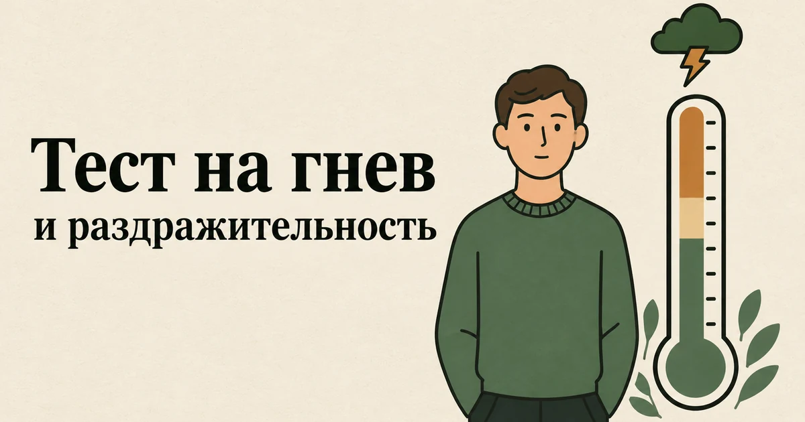

Главная → Тесты → Тест на гнев
Тест на гнев и раздражительность (шкала IPIP)
Обновлено: 16.09.2026 · 2 минуты на прохождение
Это тест на склонность к гневу по шкале из открытого научного банка IPIP — той же базы, на которой построены современные опросники черт личности. Десять утверждений о том, насколько легко вы злитесь, раздражаетесь и выходите из себя. Результат — от 10 до 50 баллов. Тест измеряет не сегодняшнее настроение, а устойчивую склонность. Бесплатно, без регистрации, ответы остаются в вашем браузере.

Что с этим делать дальше. Балл — не диагноз, а точка отсчёта: смысл он приобретает в динамике, когда видно, растёт он или падает. В приложении AI Therapist есть дневник состояния, упражнения на основе приёмов КПТ и разговор с ИИ-психологом — можно пройти шкалу повторно через пару недель и сравнить.
Что показывает шкала
Шкала взята из International Personality Item Pool — открытого банка утверждений, который психологи собирают с 1990-х годов, чтобы у исследователей были научные опросники, не закрытые лицензией. Эти десять пунктов измеряют черту, которую в модели Большой пятёрки называют гневом — одной из граней нейротизма, общей эмоциональной чувствительности.
Важно понимать, что именно это за измерение. Тест спрашивает не о том, злились ли вы на прошлой неделе, а о том, какой вы обычно: как быстро поднимается раздражение, насколько легко вывести вас из себя, часто ли держится плохое настроение. Поэтому в шкалу входят не только вспышки, но и фоновая раздражительность и склонность жаловаться — всё это разные проявления одной черты.
Половина утверждений сформулирована «наоборот»: согласие с ними означает не больше гнева, а меньше. Так шкала отделяет тех, кто читает вопросы, от тех, кто машинально соглашается со всем подряд; подсчёт учитывает это автоматически.
Расшифровка результата
Каждое утверждение стоит от 1 до 5 баллов, сумма — от 10 до 50. Официальных клинических порогов и общепринятых норм у этой шкалы нет: она создана для исследований черт личности, а не для диагностики. Поэтому уровни ниже — это трети самой шкалы, а не сравнение с населением. Они показывают, куда склоняются ваши ответы, но не говорят, «нормально» ли это.
| Баллы | Уровень | Как это обычно выглядит |
|---|---|---|
| 10–23 | Низкая склонность к гневу | Раздражение возникает по серьёзным поводам и быстро проходит |
| 24–36 | Средняя | Злитесь по ситуации: в спокойные периоды редко, в напряжённые заметно чаще |
| 37–50 | Высокая склонность к гневу | Раздражение поднимается легко и часто, а вывести из себя можно мелочью |
Черта — это не приговор и не постоянная величина. Результат заметно зависит от периода жизни: на фоне недосыпа, выгорания или долгого стресса люди честно описывают себя как более раздражительных, чем год назад. Если балл кажется вам непохожим на себя «обычного», скорее всего, он отражает именно нынешнюю нагрузку.
Гнев, агрессия и раздражительность — не одно и то же
Этот тест часто ищут как «тест на агрессию», поэтому стоит развести понятия.
Гнев — это чувство: внутренняя реакция на несправедливость, помеху или угрозу. Раздражительность — сниженный порог, при котором гнев возникает легче и чаще. Агрессия — это уже поведение: крик, оскорбления, угрозы, удары, порча вещей.
Шкала измеряет первые два и не измеряет третье. Человек с высоким баллом может ни разу в жизни не повысить голос — он просто злится часто и справляется с этим. И наоборот, агрессивное поведение бывает у людей, которые не считают себя вспыльчивыми. Поэтому высокий балл не означает, что вы агрессивны, а низкий не исключает проблем с тем, как злость выходит наружу. Если вопрос именно в срывах на других, важнее не цифра, а то, что происходит в моменте, — это подробно разобрано в статье «Вспышки гнева: почему накрывает и как перестать срываться».
Что делать с результатом
Низкая склонность к гневу (10–23)
Специально работать с гневом не нужно. Одна оговорка: очень низкий балл иногда бывает не у спокойных людей, а у тех, кто привык не замечать и не показывать злость. Если при этом копятся обида и усталость после общения, стоит посмотреть в сторону личных границ, а не радоваться цифре.
Средняя склонность (24–36)
Самый частый результат. Здесь полезно понять, от чего зависят колебания: у большинства людей раздражительность растёт вместе с недосыпом, алкоголем, хронической перегрузкой и накопленными невысказанными претензиями. Работают не усилия «сдерживаться», а изменение этого фона — и привычка говорить о том, что не устраивает, раньше, чем накопится.
Высокая склонность (37–50)
Такой балл стоит воспринимать как сигнал, особенно если злость мешает отношениям или работе. Сначала проверьте, не стоит ли за раздражительностью что-то ещё: при депрессии, выгорании, СДВГ и ПТСР она бывает одним из главных проявлений. Это можно оценить тестами на депрессию, выгорание, СДВГ и ПТСР.
Если вспышки — главная проблема, начните с того, что делать в момент, когда накрывает: как поймать ранние признаки, взять тайм-аут и почему «выпустить пар» не помогает. Всё это — в статье о вспышках гнева. С гневом хорошо работают методы когнитивно-поведенческой терапии.
Насколько тесту можно доверять
Для короткого опросника показатели хорошие: внутренняя согласованность этих десяти пунктов, по данным IPIP, — 0,88. Это значит, что утверждения действительно измеряют одно и то же, а не случайный набор.
Ограничения тоже стоит знать. У шкалы нет норм и порогов, поэтому она не скажет, выше вы среднего или ниже. Она основана на самоотчёте: люди склонны смягчать оценку своей вспыльчивости, а близкие нередко описывают нас иначе. Она измеряет черту, а не состояние, и не отвечает на вопрос, откуда раздражительность взялась. И это не диагностический инструмент: интермиттирующее эксплозивное расстройство или раздражительность при депрессии определяет специалист, а не сумма баллов.
Когда стоит обратиться к специалисту
- злость выходит в крик, угрозы, порчу вещей или физические действия;
- близкие начали вас опасаться или подстраиваться под ваше настроение;
- из-за вспышек страдают работа, отношения или родительство;
- раздражительность появилась недавно и держится неделями вместе с упадком сил, бессонницей или потерей интереса;
- злость проходит только с алкоголем;
- вы плохо помните, что говорили и делали на пике.
Если дело уже дошло до ударов или угроз — своих или в ваш адрес, — это ситуация не для самопроверки. Куда обращаться, в том числе бесплатно и круглосуточно, — в справочнике помощи; при непосредственной угрозе звоните 112.
Если после теста хочется разобрать, что именно выводит из себя и почему именно дома, — расскажите об этом. Анонимно, без регистрации, в любое время суток.
Частые вопросы
Это тест на агрессию?
Не совсем. Тест измеряет склонность к гневу и раздражительности — то, насколько легко возникает злость. Агрессия — это поведение: крик, угрозы, удары. Человек с высоким баллом может никогда не вести себя агрессивно, а агрессия бывает и у тех, кто не считает себя вспыльчивым, поэтому высокий балл не означает, что вы агрессивны.
Сколько баллов по тесту на гнев считается много?
Шкала считается от 10 до 50 баллов. Результат 37–50 означает, что ваши ответы заметно склоняются к лёгкому раздражению и частой злости, 24–36 — средний уровень, 10–23 — низкий. Официальных норм и клинических порогов у этой шкалы нет, поэтому уровни показывают положение на самой шкале, а не сравнение с другими людьми.
Можно ли изменить склонность к гневу, если это черта характера?
Да. Черты личности меняются сильнее, чем принято думать: в метаанализе 207 исследований заметные изменения появлялись в среднем за 24 недели, и сильнее всего менялась эмоциональная стабильность, к которой относится склонность к гневу. Кроме того, раздражительность сильно зависит от сна, стресса и алкоголя, и изменение этого фона даёт эффект быстрее.
Тест на гнев анонимный и бесплатный?
Да. Регистрация не нужна, тест бесплатный, подсчёт идёт прямо в браузере, а ответы никуда не отправляются — мы их не получаем и не храним. Результат виден только вам и исчезает после закрытия страницы.
Материал подготовлен командой AI Therapist. Мы используем десять пунктов шкалы гнева из International Personality Item Pool — открытого научного банка, который автор разместил в общественном достоянии с разрешением на любое использование; перевод на русский выполнен нами, подсчёт с обратными пунктами — как в оригинале. Официальных норм и клинических порогов у шкалы нет, поэтому уровни на странице — это трети шкалы, и мы говорим об этом прямо. Страница носит просветительский характер, не ставит диагноз и не заменяет консультацию специалиста.
Источники: International Personality Item Pool — ключи фасет IPIP-NEO, шкала N2 «Anger», IPIP — условия использования (public domain), Roberts B. W. et al. «A systematic review of personality trait change through intervention», Psychological Bulletin, 2017, Kjærvik S. L., Bushman B. J. «A meta-analytic review of anger management activities that increase or decrease arousal», Clinical Psychology Review, 2024, NHS — Anger.
Кто отвечает за содержание сайта и по каким правилам мы готовим материалы — на странице о проекте.